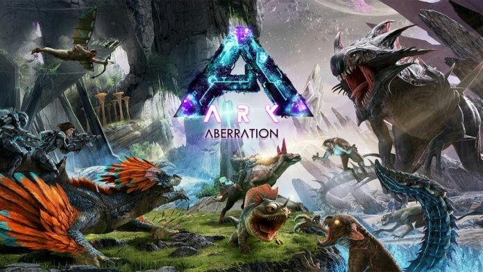
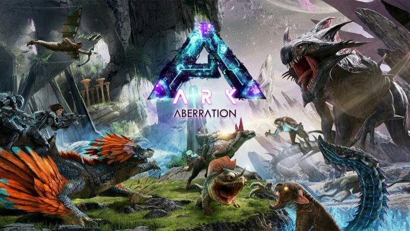
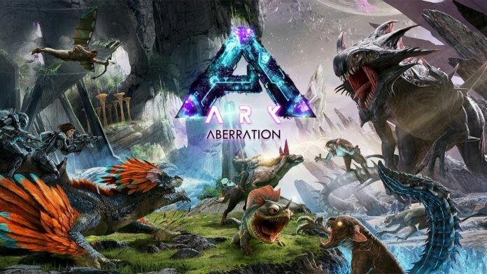
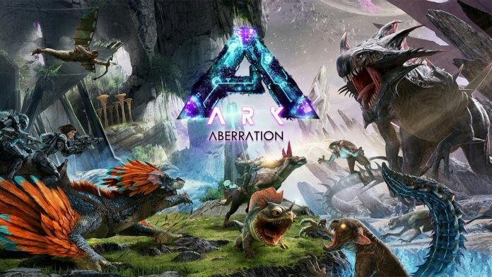

 

Ik luister naar alle soorten muziek maar vooral electronic en game rap recent dat door de makers nerdcore genoemd wordt. We hebben het over youtube kananlen zoals JT music/nerd out/tryhard ninja/stupedium/dan bull/rocket gameing/ all those kind of artist but qwa overall andre muziek ik vind bijna alle muziek soorten goed liggend aan welk liedje als ik een artist moest pakken die ik altijd zou kunnen luisteren zouden het JT music en The living tombestone zijn ik luister naar hun muziek altijd zelfs tijdens het maken van deze website
Mijn beste vriend heet Brendon Smith hij is 19 jaar oud en komt uit Engeland. Hij deed eerst een studie in game development, maar stopte er mee omdat het niet werkte en omdat de studie volgens hem slechte software gebruikte op het moment volgt hij geen studie maar werkt hier en daar bij zijn oom die hem wat werk geeft die klussen doet bij mensen maar volgens hem is het erg onregelmatig werk maar na een dag verdiend hij best redelijk ik speel vooral video games met hem en we kennen elkaar al jaren